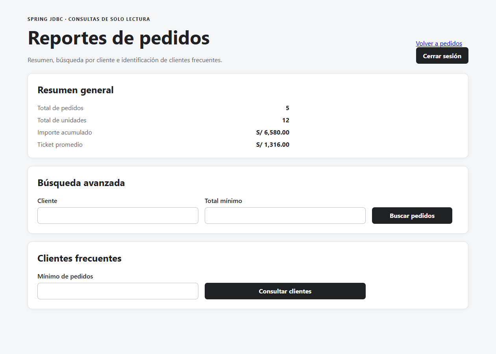
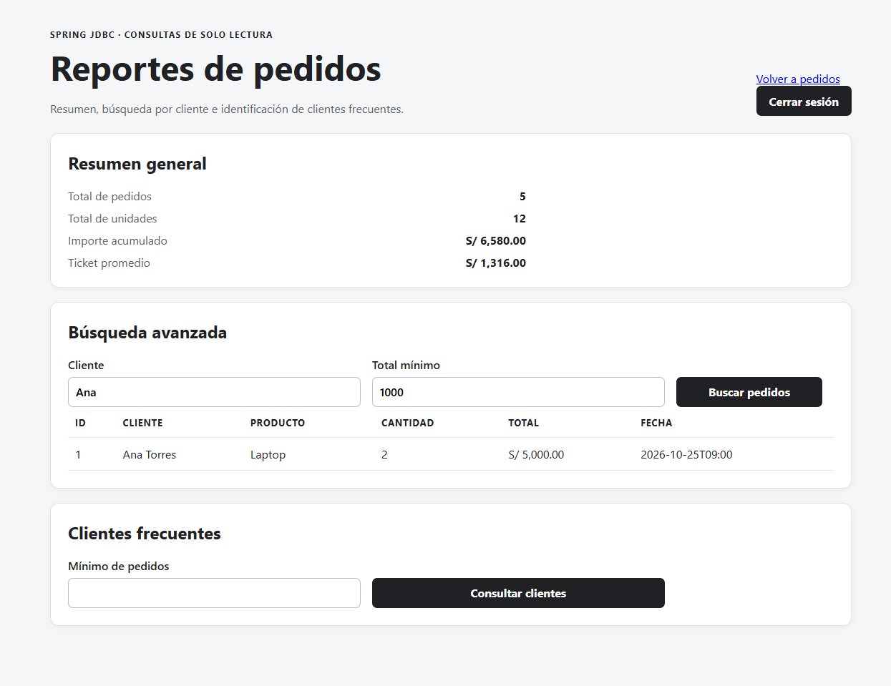
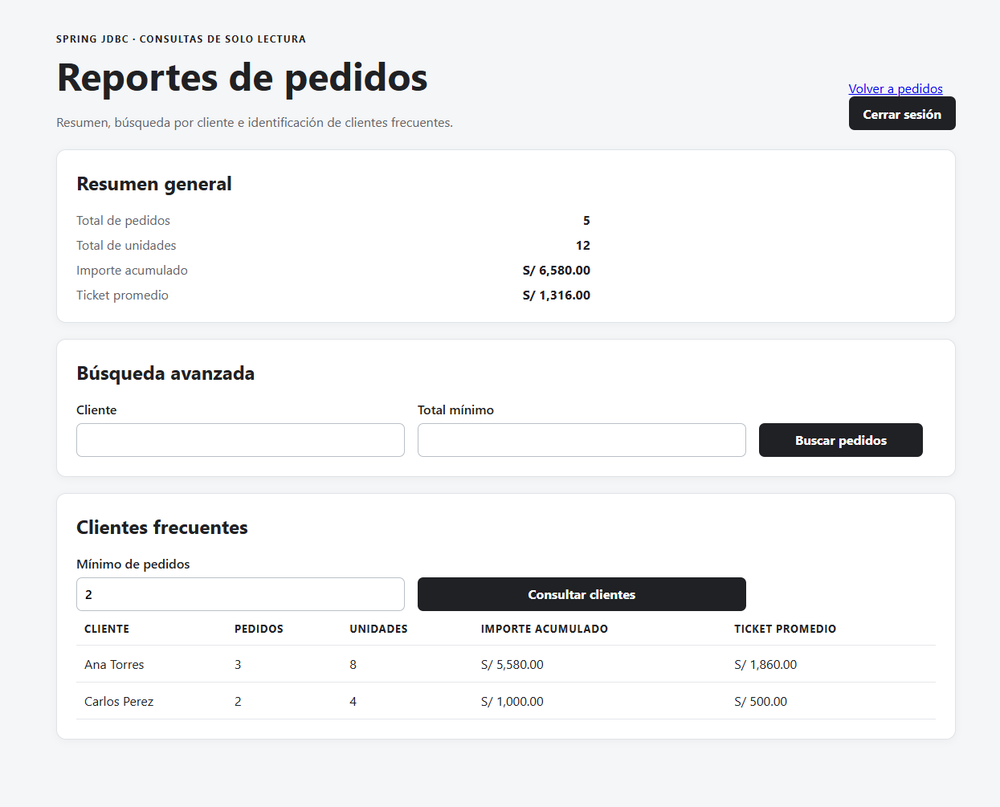
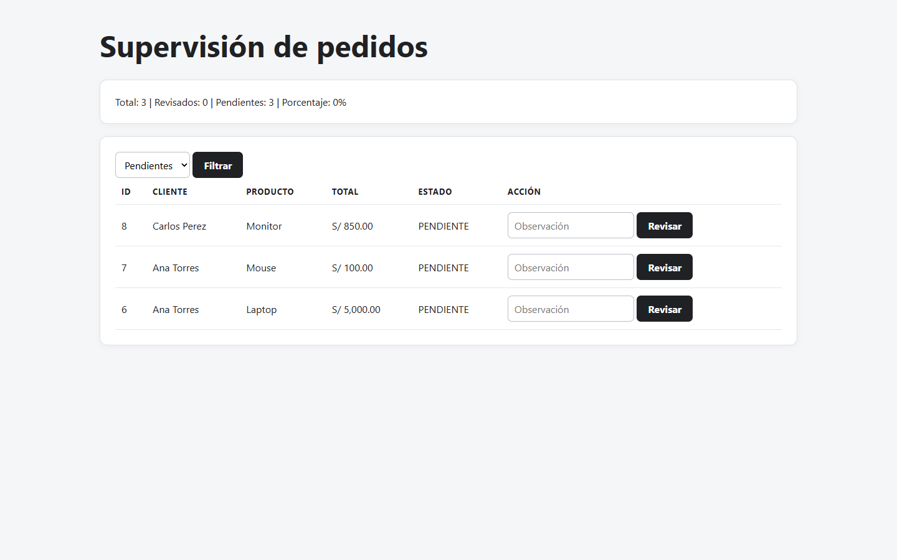
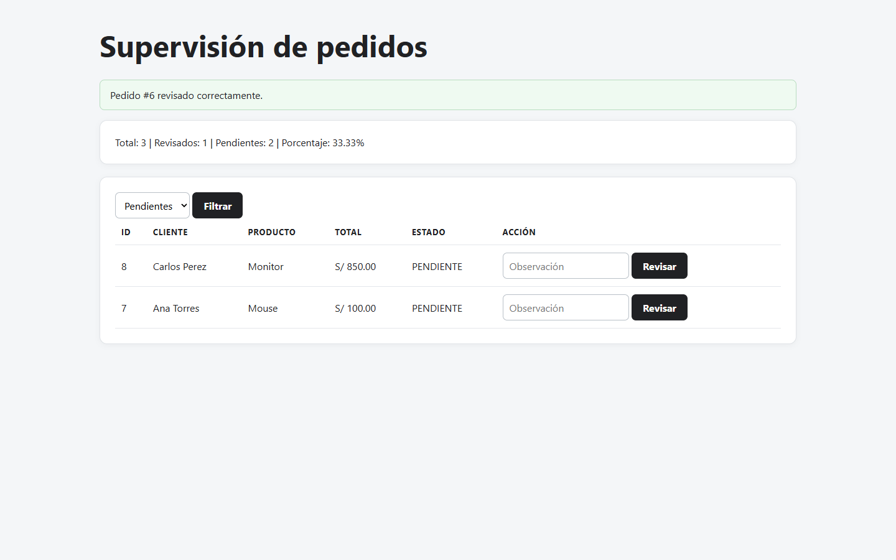
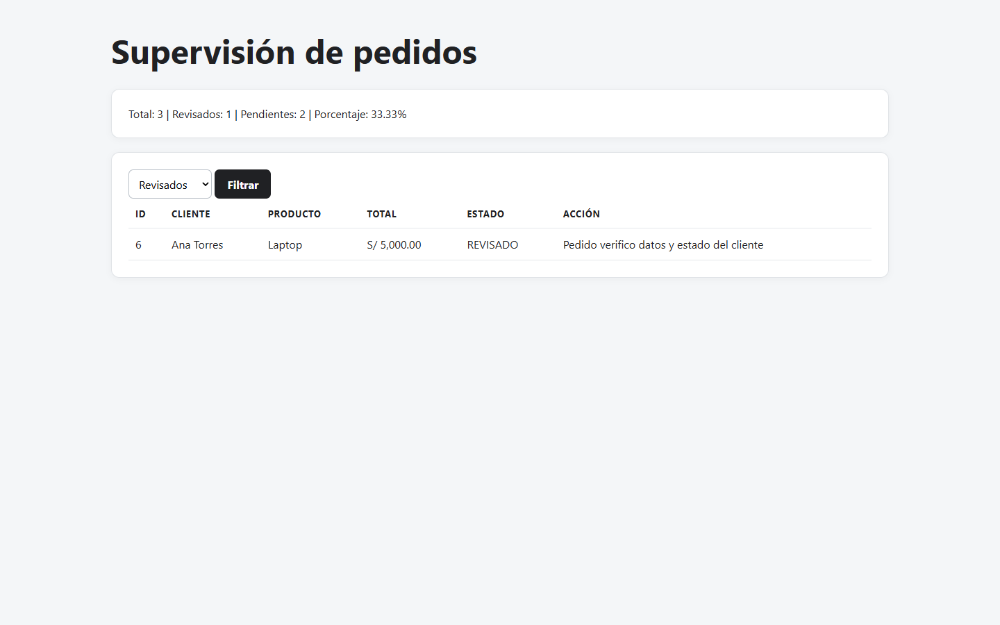
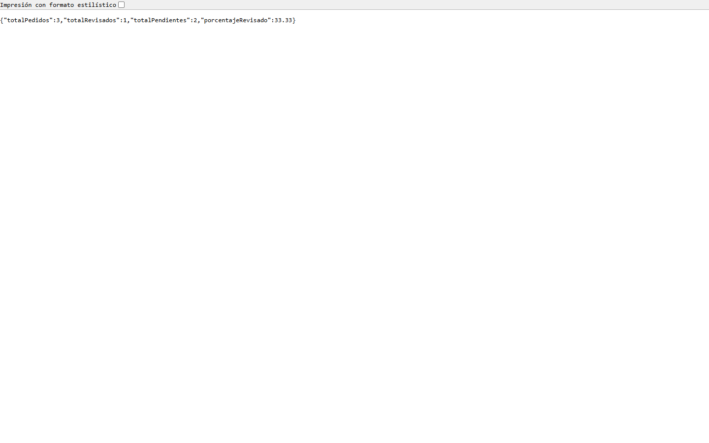
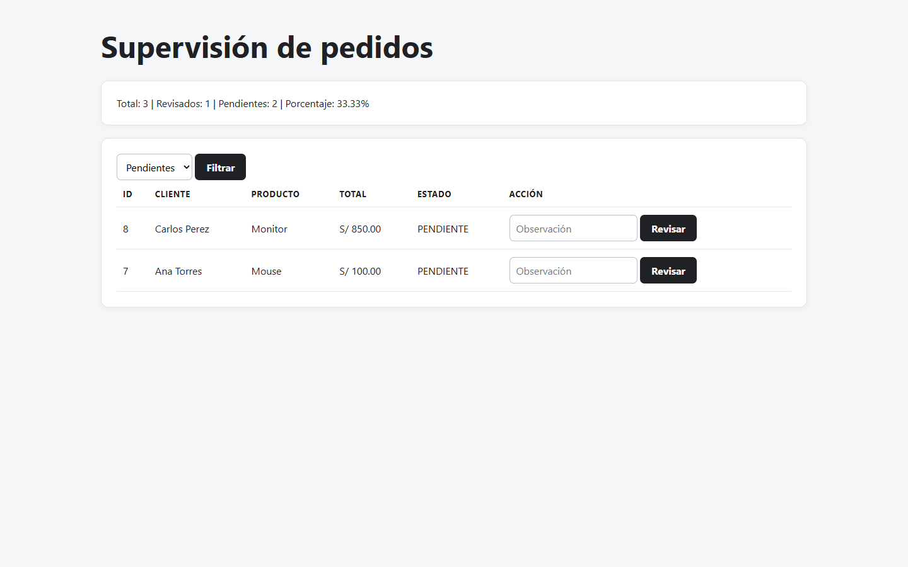
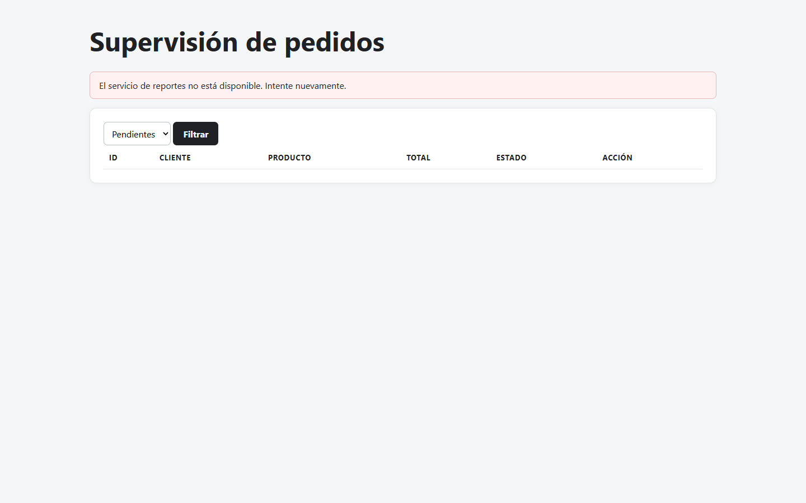

La PA4 amplía la solución PA1-PA3 con una operación de revisión. El pedido cambia a revisado y se registra una única evidencia de trazabilidad dentro de una sola transacción local de Spring JDBC.
Arquitectura transaccional
Navegador → Spring Security → DispatcherServlet → SupervisionPedidoController
→ PedidoRevisionService / @Transactional → PedidoRevisionJdbcRepository → MySQL
inventario-service permanece como dependencia externa para registrar pedidos y producir datos de prueba. No participa dentro del bloque transaccional de revisión.
Cambios por capa
Capa
Implementación PA4
Esquema
pedido.revisado, tabla pedido_revision, llave foránea y restricción única.
Repository JDBC
SQL parametrizado para existencia, estado, actualización e INSERT de trazabilidad.
Service
Validaciones e @Transactional(rollbackFor = Exception.class) para commit/rollback conjunto.
MVC
GET/POST de supervisión, Model, JSP y Post/Redirect/Get.
Integración HTTP
Cliente RestClient, DTO independientes y manejo de timeout/conexión/5xx.
2. Recursos REST y seguridad
Nuevos contratos
Recurso
Contrato
GET /api/v1/pedidos/revisiones?estado=PENDIENTE
Pedidos pendientes; observación y fecha nulas.
GET /api/v1/pedidos/revisiones?estado=REVISADO
Pedidos revisados; incluye observación y fecha de revisión.
GET /api/v1/pedidos/estadisticas/revisiones
Total, revisados, pendientes y porcentaje revisado.
Los estados distintos de PENDIENTE o REVISADO producen HTTP 400 mediante el manejador de errores REST. El cliente web conserva CSRF y autoriza la revisión solo al rol OPERADOR.
Vista de supervisión
La vista presenta identificador, cliente, producto, total, estado de revisión y acción disponible. Para pedidos pendientes muestra el formulario de observación. Para pedidos revisados presenta la evidencia almacenada.
Esquema de persistencia
ALTER TABLE pedido
ADD COLUMN revisado BOOLEAN NOT NULL DEFAULT FALSE;
CREATE TABLE pedido_revision (
id BIGINT AUTO_INCREMENT PRIMARY KEY,
pedido_id BIGINT NOT NULL,
observacion VARCHAR(500) NOT NULL,
fecha_revision DATETIME NOT NULL,
FOREIGN KEY (pedido_id) REFERENCES pedido(id),
UNIQUE (pedido_id)
);
3. Casos prácticos obligatorios
Caso
Resultado esperado
Verificación
1. Revisión correcta
revisado=true y una trazabilidad.
JSP + MySQL antes/después.
2. Revisión duplicada
HTTP 409 o mensaje controlado.
Sin segunda actualización/INSERT.
3. ID/observación inválida
400/404 y sin escritura.
Validación de entrada y ID.
4. Rollback real
Falla el INSERT; UPDATE revierte.
Prueba JUnit con H2.
5. Reportes disponibles/caídos
JSON/JSP o mensaje 503 controlado.
Detener puerto 8083.
Las capturas manuales de los cinco casos deben guardarse en entrega-pa4/evidencias. El README de evidencias contiene la guía exacta de parámetros y consultas MySQL.
4. Pruebas automatizadas y evidencia
Pruebas nuevas
Prueba
Tipo
Resultado
PedidoRevisionServiceImplTest
Commit/JUnit-Mockito
Aprobada
PedidoRevisionRollbackIntegrationTest
Rollback con H2
Aprobada
PedidoReporteClientIntegrationTest
Indisponibilidad HTTP
Aprobada
PedidoRevisionApiControllerTest
Contrato REST
Aprobada
Ejecución Maven
Proyecto
Comando
Resultado registrado
sistema-pedidos-springboot
.\mvnw.cmd test
42 pruebas, 0 fallos, 0 errores.
pedidos-reportes-service
.\mvnw.cmd test
3 pruebas, 0 fallos, 0 errores.
Estado de evidencias PA4
Capturas de revisión, duplicado, validaciones y indisponibilidad con H2 adjuntas.
Registros .log de ambos comandos Maven finales adjuntos en entrega-pa4/evidencias/automatizadas.
Capturas MySQL reales pendientes si el motor y la base principal no están disponibles.
Anexo visual — evidencia disponible
Las siguientes imágenes son evidencias reales recopiladas durante PA3 y demuestran la continuidad funcional sobre la que se construye PA4. No sustituyen las capturas manuales pendientes de revisión y MySQL.

Figura A1. Resumen general de la aplicación demostrada durante PA3.

Figura A2. Evidencia de búsqueda por cliente y monto.

Figura A3. Evidencia de clientes frecuentes y métricas.
Anexo PA4 — casos 1 y 2
Las capturas fueron obtenidas con el perfil H2 demostrativo compartido por sistema-pedidos y pedidos-reportes-service. Se indican como evidencia alternativa reproducible, no como ejecución MySQL.
Caso 1. Revisión correcta

Antes: pedido pendiente y estadísticas sin revisados.

Después: revisado=true y mensaje de confirmación.

JSP con filtro REVISADO.

Endpoint de estadísticas actualizado.
Caso 2. Revisión duplicada

Segundo intento rechazado sin crear otra trazabilidad.
Anexo PA4 — casos 3, 4 y 5
Caso 3. Validaciones e ID inexistente
Validación de ID y observación sin cambios parciales.
Caso 4. Rollback real
La prueba PedidoRevisionRollbackIntegrationTest fue aprobada por JUnit 5 en H2. Durante el fallo del segundo INSERT, la actualización previa del pedido se revierte y no queda una revisión confirmada.
Resultado Maven: 42 pruebas aprobadas, 0 fallos y 0 errores en sistema-pedidos-springboot.
Caso 5. Servicio disponible/no disponible
Servicio disponible: estadísticas REST 200.

Puerto 8083 detenido: mensaje controlado en la JSP.
5. Conclusiones y referencias
La solución separa presentación, negocio e integración HTTP. La revisión usa Spring JDBC y una transacción local de MySQL; el fallo en la segunda escritura revierte la primera. Los dos recursos REST quedan implementados con DTO independientes y el cliente traduce errores remotos a una excepción controlada.
Limitaciones
Las pruebas reales de MySQL requieren ejecutar el esquema y configurar variables de entorno.
La disponibilidad de reportes depende del proceso activo en el puerto 8083.
No se replica una transacción distribuidamente con inventario-service.
Referencias APA
Spring. (2026). Spring Framework JDBC support. https://docs.spring.io/spring-framework/reference/data-access/jdbc.html
Spring. (2026). Spring MVC. https://docs.spring.io/spring-framework/reference/web/webmvc.html
Spring. (2026). Spring Security Reference. https://docs.spring.io/spring-security/reference/
Spring. (2026). Spring Framework transaction management. https://docs.spring.io/spring-framework/reference/data-access/transaction.html